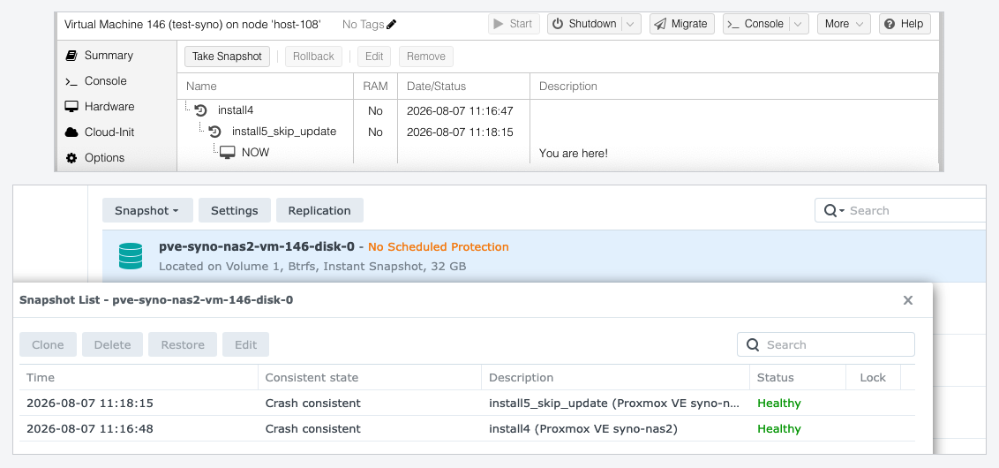
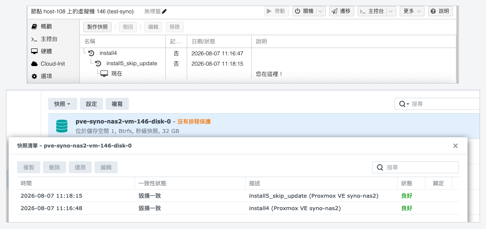
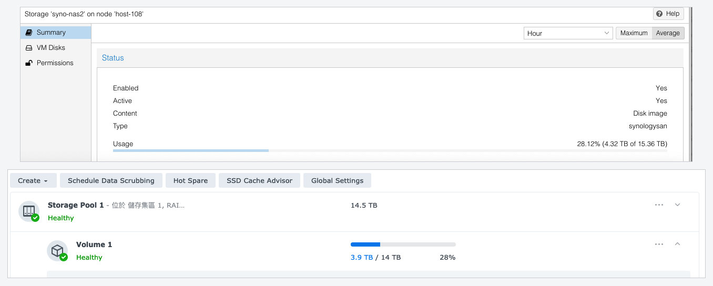
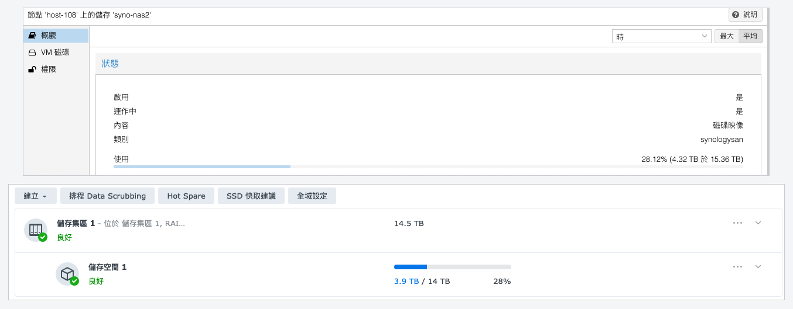

jt-pve-storage-synology
Proxmox VE uses Synology SAN Manager directly as its VM storage back end. 讓 Proxmox VE 直接把 Synology SAN Manager 當成 VM 儲存後端。
Every Proxmox VE VM disk maps to one thin LUN on the Synology NAS. So creating, removing, resizing, cloning, snapshotting and rolling back a VM all drive the NAS's own LUN features, instead of carving one large shared LUN up with LVM on the PVE side. No extra LVM storage layer, and no LUNs to manage by hand. 每一顆 Proxmox VE VM 磁碟，直接對應 Synology NAS 上的一個 thin LUN。因此 VM 的建立、刪除、擴充、Clone、Snapshot 與 Rollback，都可以直接操作 NAS 原生的 LUN 能力，而不是先建立一個大型共用 LUN，再交給 PVE 用 LVM 切割。沒有額外的 LVM 儲存層，也不需要手動管理 LUN。
PVE 8 / 9 · Shared Storage · Live Migration · Snapshot / Rollback · Clone · Backup / Restore · Multipath 支援 PVE 8 / 9、Shared Storage、Live Migration、Snapshot / Rollback、Clone、Backup / Restore 與 Multipath。
Which Proxmox VE operations work支援的 Proxmox VE 操作
Every row was driven on real hardware, from the web interface and from the command line, for virtual machines and for containers alike. The rows that are not a yes say why.每一列都在實機上、從網頁介面和指令列各跑過一次，虛擬機和容器都跑。不是「可以」的那幾列，都寫出原因。
| Operation操作 | VM虛擬機 | Container容器 |
|---|---|---|
| Create and remove a disk建立、移除磁碟 | ✓ | ✓ |
| Thin provisioning精簡配置
Every disk is a Btrfs thin LUN, so it occupies what has been written rather than what it was created as. Because that can overcommit the DSM volume,
syno-min-free refuses to allocate once the volume's free space falls below it.每一顆磁碟都是 Btrfs thin LUN，所以它佔用的是已經寫入的量，不是建立時的大小。因為這樣可以超額配置 DSM 儲存空間，所以儲存空間的剩餘空間低於 syno-min-free 時會拒絕配置。 |
✓ | ✓ |
| Resize擴充容量
For a container the filesystem grows online too.容器的檔案系統也是線上長大。
|
✓ | ✓ |
| Snapshot and rollback快照、倒回
Verified at the block level: written data, snapshot, overwritten with zeros, rolled back, the original checksum returned.在 block 層驗證過：寫入資料、拍快照、覆蓋成 0、倒回，原本的檢查碼回來了。
|
✓ | ✓ |
| A snapshot including memory含記憶體的快照
Proxmox VE does not snapshot a container's memory at all.Proxmox VE 完全不會為容器拍記憶體快照。
|
✓ | n/a不適用 |
| Full clone完整複製
Proxmox VE refuses a full clone of a running container itself.Proxmox VE 自己就拒絕對執行中的容器做完整複製。
|
✓ | Stopped only需先停機 |
| Linked clone連結複製 | ✓ | ✓ |
| Convert to a template轉換為範本 | ✓ | ✓ |
| Live migration即時遷移
Proxmox VE has no live migration for containers.
--restart migration is verified and took 26 seconds.Proxmox VE 沒有容器的即時遷移。--restart 遷移驗證過，花 26 秒。 |
✓ | n/a不適用 |
| Offline migration離線遷移 | ✓ | ✓ |
| Backup and restore備份、還原 | ✓ | ✓ |
| Multipath, configured for you多重路徑，而且是自動設定的
The plugin writes the multipath configuration itself and reloads multipathd when it changes. Nothing to edit by hand.multipath 的設定由 plugin 自己寫，變更時也自己重新載入。沒有東西需要手動編輯。
|
✓ | ✓ |
| Storage migration儲存遷移
Proxmox VE's move disk, and move volume for a container. Onto another storage type and back again, both directions.Proxmox VE 的 move disk，容器是 move volume。搬到其他 storage 型別再搬回來，兩個方向都測。
|
✓ | ✓ |
CHAP is a property of the storage rather than of a guest, since one iSCSI session on the node serves both kinds, so it is not in the table. It is verified.CHAP 是這個 storage 的性質，不是 guest 的，因為節點上同一個 iSCSI 工作階段同時服務兩種 guest，所以沒有放進表格。它驗證過。
Measured on hardware, not just called through an API實機驗證過，不只是 API 呼叫得通
vzdump modes, every restore byte-identicalvzdump 備份模式，還原後位元組完全相同Two models and three DSM versions: a DS918+ on 7.1.1 and 7.4.1, a DS925+ on 7.3.2. Both were driven from adding the storage through to removing it, leaving nothing behind on either side. Resize, clone, backup, migration and two-portal multipath were run on the DS918+ only. 兩台機型、三個 DSM 版本：DS918+ 的 7.1.1 與 7.4.1，DS925+ 的 7.3.2。兩台都從加入 storage 跑到移除，兩邊都沒有留下東西。擴充、複製、備份、遷移與雙 portal 多重路徑只在 DS918+ 上跑過。
Nine protocol findings changed a design decision each, and one rule the kernel's own source would lead you to get wrong: What the protocol turned out to be. 九個協定上的發現各自改變了一個設計決定，還有一條照著核心原始碼讀會讀錯的規則：協定實際上長什麼樣。
The release checklist發版前的操作清單
Every row was run on a production five-node cluster, and B through D once from the web interface and once from the CLI. The two run in different environments, so the same operation is not guaranteed to behave the same way, and that has caught five defects. What each row exercises: the checklist. 每一列都在一個五節點的正式叢集上跑過，B 到 D 從網頁介面和指令列各跑一次。網頁介面和指令列的執行環境不一樣，同一個操作不保證有同樣結果，而這件事抓到過五個缺陷。每一列走到什麼：操作清單。
| Operation操作 | Driven from從哪裡驅動 | Result結果 | |
|---|---|---|---|
| A1–A4 | Add · edit · CHAP · remove a storage — not reachable from the GUI, so pvesm plus a perl -T run on the node新增 · 編輯 · CHAP · 移除 storage ：GUI 到不了，所以是 pvesm 加上在節點上跑一次 perl -T | CLI the GUI has no such page指令列 網頁介面沒有這些操作 | pass通過 |
| B1–B4 | Add a disk · resize · move to another storage and back · detach and remove新增磁碟 · 擴充 · 移動到別的 storage 再移回 · 卸離並移除 | Web UI + CLI網頁介面 + 指令列 | pass通過 |
| C1–C5 | Snapshot running and stopped · roll back · delete · the name visible in SAN Manager執行中與關機拍快照 · 倒回 · 刪除 · 名稱在 SAN Manager 看得到 | Web UI + CLI網頁介面 + 指令列 | pass通過 |
| D1–D5 | Stop and start · migrate away and back, offline and online · full clone · clone from a snapshot · template, then linked and full clone from it關機與啟動 · 遷移離開再遷回（離線與線上）· 完整複製 · 從快照複製 · 轉範本再做連結與完整複製 | Web UI + CLI網頁介面 + 指令列 | pass通過 |
| E1–E5 | Backup in all three vzdump modes · restore to a new VM ID · restore overwriting the originalvzdump 三種模式的備份 · 還原到新的 VM ID · 覆蓋原本的 VM | CLI指令列 | pass通過 |
| F1–F4 | Cleanup safety: the reaper run against a running guest · a map and its tracking entry gone on stop · an unused map removed by name · multipath -F never in the tree清理安全性：對執行中的 guest 跑一次回收工具 · 停機後 map 與追蹤記錄都消失 · 指名移除未使用的 map · 樹裡絕不出現 multipath -F | CLI the web interface verifies the consequence: the guest still starts指令列 網頁介面驗證的是後果：guest 還是開得起來 | pass通過 |
pve-syno-reap reported nothing left behind on every node.
最後要兩邊核對一次，這一步才抓得到「回報成功但其實沒做到」。全部做完之後，儲存伺服器上剩下的 LUN 與 target 對應，剛好就是 VM 設定引用的那些；節點上的 map 與追蹤紀錄也對得上；每個節點的 pve-syno-reap 都回報沒有殘留。
Snapshot rollback快照倒回
A disk can be rolled back to any of its snapshots, repeatedly, and it is the storage server that does the work. Two things make it safe, and both are measured rather than assumed: 一顆磁碟可以倒回它的任何一個快照，而且可以反覆做，實際動作是由儲存伺服器完成的。有兩件事讓它安全，而兩件都是量測到的、不是假設的：
- The LUN's uuid does not change, so the SCSI serial and the WWID survive and a node does not suddenly find a different disk where its own was.LUN 的 uuid 不會變，所以 SCSI 序號與 WWID 都存活，節點不會突然在自己磁碟的位置上找到另一顆。
- Snapshots newer than the restored one survive. Restoring to the oldest of three left all three in place, and
restored_timerecords the epoch second so the result is observable afterwards.比快照時間點更新的快照會存活。還原到三個之中最舊的那一個，三個都還在，而restored_time會記錄還原當下的 epoch 秒，所以事後看得出來。
What is verified, and what is not目前的驗證狀態
The same list in both directions, so neither half is easier to find than the other. 兩個方向都列出來，哪一半都不會比另一半難找。
- A guest booting from the NAS, on a production five-node clusterguest 從 NAS 開機，在一個五節點的正式叢集上
- Live migration and offline migration即時遷移與離線遷移
- Snapshot and rollback, confirmed at the block level快照與倒回，在 block 層確認過
- Backup and restore in all three
vzdumpmodes三種vzdump模式的備份與還原 - Multipath through a path failure多重路徑撐過路徑故障
- A crashed node's LUN taken over by a surviving node節點當機後由存活節點接手 LUN
- LXC containers: created, snapshotted, rolled back, resized, cloned, templated, backed up, restored and migratedLXC 容器：建立、快照、倒回、擴充、複製、轉範本、備份、還原、遷移都跑過
- A whole-NAS outage, with the nodes and every other storage unaffected整台 NAS 中斷，節點和其他 storage 都不受影響
- A DSM upgrade across it, 7.1.1 to 7.4.1, every LUN uuid intact中途跨過一次 DSM 升級，7.1.1 到 7.4.1，全部 LUN uuid 完好
- Synology HA has never been tested; no such pair has been near thisSynology HA 沒有測過，手上從來沒有這種機器
- A UC dual-controller chassis has never been tested either. It is supported by design, and the plugin warns when it detects oneUC 雙控制器機箱也沒有測過。設計上支援，plugin 偵測到會發出警告
- The DSM account must be in
administrators, because DSM offers nothing narrowerDSM 帳號必須屬於administrators，因為 DSM 沒有更小的選項 - Two models out of everything Synology sells is a small sample兩個機型，對照 Synology 賣的機型數量是很小的樣本
- Running it found about thirty defects that reading the code never would, so assume there are more實際跑起來找到大約三十個讀程式碼讀不出來的缺陷，所以請假設還有
Item by item, with what was measured and what was not: the test record. 逐項的量測結果，以及哪些還沒有量測過，都在驗證紀錄裡。
It is public because the discovery tool is useful on its own to anyone who wants to know what their DSM's SAN API offers —and because the record of what is and is not known about that API is worth reading before trusting any plugin built on it, including this one. 會公開，是因為探索工具本身就對想知道自己的 DSM 的 SAN API 提供什麼的人有用；也因為那份「哪些知道、哪些不知道」的紀錄，值得在信任任何建立在它之上的 plugin 之前先讀，包括這一個。
Read before you deploy: the LUN ceiling, and what happens when you reach it部署前必讀：LUN 數量上限，以及達到上限時的行為
One VM disk is one LUN, so this is a real capacity limit —and on some models it is very small. 一顆 VM 磁碟就是一個 LUN，所以這是實實在在的容量限制，而在某些機型上它非常小。
The LUN ceiling is your VM-disk ceiling. Count it before you buy.LUN 上限就是你的 VM 磁碟數上限。買之前先算。
This is not a size limit, it is a count. One VM disk is one LUN, so a NAS that publishes 256 LUNs holds 256 VM disks in total —for the whole cluster, not per node, and shared with every LUN already on that NAS for anything else. A VM with a system disk and a data disk spends two of them, so 256 is roughly 128 such VMs. On a model that publishes 4, it is two.The plugin reads the number from your NAS and refuses before the storage server does, counting every LUN on it rather than only its own. So the failure is an error message at allocation time, not a surprise — but the planning is still yours. 這不是容量限制，是數量限制。一顆 VM 磁碟就是一個 LUN，所以一台公布 256 個 LUN 的 NAS，總共只能放 256 顆 VM 磁碟，是整個叢集共用，不是每個節點各算，而且要和那台 NAS 上為別的用途建的每一個 LUN 一起分。一台有系統碟加資料碟的 VM 就用掉兩個，所以 256 大約是 128 台這樣的 VM。在公布 4 個的機型上，是兩台。
Plugin 會從你的 NAS 讀那個數字，並且在儲存伺服器拒絕之前先拒絕，而且數的是那台 NAS 上的每一個 LUN，不只是它自己建的。所以撞到上限時看到的是配置當下的錯誤訊息，不是意外，但規劃還是你的事。
The figure everyone quotes —512 LUNs and 256 targets —comes from Synology's SAN Manager Technical Specifications, which footnotes it: “the maximum number of LUNs, targets, and snapshots varies according to models”. It is the ceiling for the whole product line, not for your NAS. 大家引用的那個數字（512 個 LUN、256 個 target）來自 Synology 的 SAN Manager 技術規格，而它自己註明：「LUN、target 與快照的最大數量會依機型而異」。那是整條產品線的上限，不是你那台 NAS 的。
| Series系列 | Model機型 | Max LUNs最大 LUN | Max targets最大 target |
|---|---|---|---|
| FS | FS6400, FS3600 | 512 | 256 |
| FS | FS3410 | 256 | 128 |
| FS | FS2500 | 128 | 64 |
| SA | SA6400, SA3600 | 512 | 256 |
| SA | SA3410, SA3400D | 256 | 128 |
| SA | SA3200D | 128 | 64 |
| XS+ | DS3622xs+, RS4021xs+, RS3621xs+ | 256 | 128 |
| XS | RS3618xs | 128 | 64 |
| Plus | DS1821+, DS925+, DS923+, DS920+, DS918+, DS723+ | 256 | 128 |
| Plus | DS1825+, RS2825RP+, RS1221+ | 128 | 64 |
| Plus | DS425+ | 4 | 2 |
| Value | DS423, DS223 | 4 | 2 |
| J | DS223j, DS124 | 4 | 2 |
Every figure is quoted from that model's own datasheet. Three things in the table matter more than any row. The series does not predict the number. The numbers are not monotonic with generation —a DS1825+ (2025) publishes 128 where the older DS1821+ publishes 256. And on J, Value and some small Plus models the limit is 4 LUNs: four virtual disks for the whole storage, which one VM with a system and a data disk half exhausts. 每一個數字都引自該機型自己的規格表。表裡有三件事比任何單一列都重要。系列不能預測數字。數字和世代不是單調的：DS1825+（2025 年）公布 128，而更舊的 DS1821+ 公布 256。而在 J、Value 和某些小型 Plus 機型上，上限是 4 個 LUN：整個 storage 只有四顆虛擬磁碟，一台有系統碟和資料碟的 VM 就用掉一半。
SYNO.Core.System info type=define on that NAS reports exactly 256 and 128. They agree; what disagreed was the documentation, which had compared a model against a line-wide figure.
規格表和 API 之間沒有落差。DS918+ 自己的產品規格公布 256 個 LUN、128 個 target，而該機器上的 SYNO.Core.System info type=define 回報的正好是 256 和 128。它們是一致的；不一致的是文件，它拿一個機型去比對產品線層級的數字。
So ask the NAS. SYNO.Core.System info with type=define reports the model's own ceilings, and neither public reference client reads them. The plugin reads all three —LUNs, targets, and snapshots per LUN —and refuses before the NAS does. The snapshot ceiling is shared with any schedule set in SAN Manager, so the count includes snapshots this plugin did not take. Full sourced table and every official link: docs/LIMITS.md.
所以要問 NAS。SYNO.Core.System 的 info（type=define）會回報機型自己的上限，而兩份公開的參考實作都沒有讀它。這個 plugin 會讀三個上限（LUN、target、每個 LUN 的快照）並且在 NAS 之前先拒絕。快照上限是和 SAN Manager 裡設定的排程共用的，所以計數包含不是這個 plugin 拍的快照。附出處的完整表格與所有官方連結：docs/LIMITS_zh-TW.md。
At the ceiling DSM refuses cleanly, with a code: 18990541 for LUNs, 18990542 for targets, 18990543 for snapshots. Nothing is damaged, but an operator sees only an allocation failure with a five-digit number in it, while pvesm status goes on showing terabytes free. Space is not the problem, so adding disks will not help.
達到上限時 DSM 會明確拒絕，並回報錯誤碼：LUN 是 18990541、target 是 18990542、快照是 18990543。什麼都不會壞，但操作者看到的只是「配置失敗」加一個五位數字，而 pvesm status 還顯示好幾 TB 可用。問題不是空間，所以加硬碟也沒有用。
A snapshot that includes the RAM takes a LUN of its own含記憶體的快照會自己吃掉一顆 LUN
Tick Include RAM and Proxmox VE writes the memory to a separate volume,vm-<vmid>-state-<snapname> —which on this storage is another LUN, against the same ceiling. Two things make it larger than people expect. It is sized at twice the VM's RAM plus 500 MB, because PVE reserves room to finish the save without stopping the guest for long: an 8 GiB VM asks for a 16.5 GB LUN. And it lands here by default —find_vmstate_storage prefers a shared storage the VM already has a disk on, and this storage is always shared. Set vmstatestorage on the VM to send it elsewhere. It is freed when the snapshot is deleted or rolled back. Driven on hardware, not read out of PVE: the plugin recognises the name and treats the state volume as an ordinary LUN.
勾選包含記憶體之後，Proxmox VE 會把記憶體寫進一顆獨立的磁碟 vm-<vmid>-state-<快照名稱>。在這個 storage 上那就是另一顆 LUN，算在同一個上限裡。有兩件事讓它比一般人想的大。它的容量是 VM 記憶體的兩倍再加 500 MB，因為 PVE 要留出空間把儲存完成、又不讓 guest 停太久：一台 8 GiB 的 VM 會要一顆 16.5 GB 的 LUN。而且它預設就會落在這裡：find_vmstate_storage 偏好「VM 已經有磁碟在上面的共用 storage」，而這個 storage 一定是共用的。要把它放到別的地方，就在該 VM 上設定 vmstatestorage。快照刪除或倒回之後它會被釋放。這是實機跑出來的，不是從 PVE 原始碼推論的：plugin 認得那個名稱，把 state 磁碟當成一般的 LUN 處理。
The three ceilings in the order they bite: LUNs, one per VM disk; snapshots per LUN, 256 and shared with the user's own SAN Manager schedule; and targets, irrelevant in the default shared mode which uses one —and the reason per-volume is not the default, since 128 targets would cap the storage below the LUN ceiling.
三個上限，依照先後遇到的順序：LUN，每顆 VM 磁碟一個；每顆 LUN 的快照，256 個，而且和使用者自己的 SAN Manager 排程共用額度；以及 target，在預設的 shared 模式下無關緊要，因為只用一個。這也正是 per-volume 不是預設的原因，因為 128 個 target 會把 storage 卡在低於 LUN 上限的地方。
max_snapshot_per_lun 256 and max_snapshot_per_lun_v2 128 —the identical pair, so it is not a quirk of one model. Which one DSM enforces cannot be read out of the API; it would take a 129th snapshot on one LUN to find out. The plugin therefore guards at the lower one, because a guard that lets the storage server refuse first has failed at its only job. If you are refused at 128 the message names both numbers. The ceiling is also shared with any snapshot schedule you set in SAN Manager, and those count.
DS918+ 與 DS925+ 都公布 max_snapshot_per_lun 256 與 max_snapshot_per_lun_v2 128，兩台一模一樣，所以這不是某一個機型的怪癖。DSM 實際執行的是哪一個，從 API 讀不出來，要在同一顆 LUN 上拍到第 129 張才知道，所以 plugin 守在較小的那個。如果你在 128 被拒絕，訊息會把兩個數字都寫出來。這個上限也和你在 SAN Manager 裡設的快照排程共用。
Requirements系統需求
| DSM | 7.0 or later. 7.1.1, 7.3.2 and 7.4.1 are verified. Dual-controller DSM UC is refused, not approximated. The version is a floor, not the decision: the capability gates, the advertised API set and a Btrfs volume are what actually decide, and Btrfs support is model-dependent —an entry-level NAS on 7.2 may still be unusable7.0 以上，已驗證 7.1.1、7.3.2 與 7.4.1。雙控制器的 DSM UC 會被拒絕，不會假裝支援。版本號只是門檻不是判準：真正決定的是能力閘門、公佈的 API 範圍，以及儲存空間是不是 Btrfs，而 Btrfs 支援是看機型的，一台跑 7.2 的入門機仍然可能不能用 |
| Volume儲存空間 | Btrfs. Snapshots exist only for a thin LUN on Btrfs, so an ext4 volume is refused when the storage is added rather than failing at the first snapshotBtrfs。快照只存在於 Btrfs 上的精簡 LUN，所以 ext4 的儲存空間在加入 storage 時就被拒絕，而不是等到第一次拍快照才失敗 |
| Model型號 | One with iSCSI target support. The LUN ceiling is per-model and the NAS reports it —and on a DS425+ or any J/Value model it is 4, which is four virtual disks for the whole storage支援 iSCSI target 的機型。LUN 上限是看機型的，而且 NAS 會回報它，而在 DS425+ 或任何 J／Value 機型上它是 4，也就是整個 storage 只有四顆虛擬磁碟 |
| Network網路 | HTTPS to DSM. Plain HTTP is refused —DSM would accept the login with the password in a URL, and that writes it into the NAS's own access log以 HTTPS 連到 DSM。純 HTTP 一律拒絕：DSM 會接受把密碼放在 URL 裡的登入，而那會把它寫進 NAS 自己的存取記錄 |
| Proxmox VE | 8.x / 9.x. The storage API version is negotiated against the node, never hardcoded8.x／9.x。儲存 API 版本是對節點協商出來的，從不寫死 |
The DSM accountDSM 帳號
Create a dedicated account for the plugin. It has to be in administrators, and everything else can be taken away.
為這個 plugin 建立一個專用帳號。它必須在 administrators 群組裡，而其他一切都可以拿掉。
# DSM → Control Panel → User & Group → Create
Name pve-storage # this is what --syno-username gets
Groups administrators # REQUIRED — DSM has nothing smaller, see below
Shared folders No access # to every one of them
Home folder not created
Applications Deny all except DSM # the API logs in through DSM itself
Quota none
Speed limit none
2FA optional # the plugin can carry the device token
# then, still in Control Panel
Security → Firewall allow the DSM port only from your PVE node addresses
Security → Account leave Auto Block on — the plugin is written not to trip it
Never the built-in admin. And one thing DSM will not let you narrow, worth knowing before you plan the NAS's network: there is no "manage LUNs" privilege —no SAN operator role, and SAN Manager is not in the per-user Applications list— so the account must be an administrator. Everything else can still be taken away, and should be: every shared folder, every application but DSM, every address that is not a PVE node. A leaked credential then cannot read your files over SMB.
絕對不要用內建的 admin。而且在規劃 NAS 的網路之前，有一件 DSM 不讓你收窄的事最好先知道：沒有「管理 LUN」這種權限（沒有 SAN 操作員角色，應用程式權限清單裡也沒有 SAN Manager）所以帳號必須是管理員。其他一切仍然拿得掉，也應該拿掉：每一個共用資料夾、除 DSM 以外的每一個應用程式、每一個不屬於 PVE 節點的位址。這樣一組洩漏的憑證就翻不了你的檔案。
administrators is refused at login with 402. On 7.4.1 the account's Applications tab lists twenty applications and not one is SAN Manager.
7.1.1 上只有三個群組，沒有一個是 iSCSI 專用的；不在 administrators 裡的帳號在登入就被 402 拒絕。7.4.1 上那個帳號的應用程式分頁列出二十個應用程式，沒有一項是 SAN Manager。
The account, its privileges, Auto Block, 2FA and TLS帳號、權限、自動封鎖、2FA 與 TLS
High availability and dual controllers高可用性與雙控制器
Synology has two arrangements that both get called "HA", and they are different problems. The plugin handles both, and neither has been verified on hardware yet. Synology 有兩種都被叫做「HA」的架構，而它們是兩個不同的問題。兩種架構 plugin 都已有對應處理，但目前皆尚未完成實機驗證。
| Synology HA (SHA)Synology HA（SHA） | UC / SA dual controllerUC／SA 雙控制器 | |
|---|---|---|
| Shape架構 | two chassis, active/passive兩台機箱，主／備 | two controllers in one chassis一個機箱兩個控制器 |
| Detected by偵測方式 | — | firmware_ver contains含 DSM UC |
| Management address管理位址 | one floating cluster IP一個叢集共用的虛擬 IP | one per controller, none floating每個控制器各一個，沒有虛擬 IP |
| Configure as設定方式 | --syno-portal <cluster-ip> |
--syno-portal <a>,<b> |
| Closest analogue最接近的類比 | Pure Storage's vir0Pure Storage 的 vir0 |
PowerVault ME's two controller addressesPowerVault ME 的兩個控制器位址 |
syno-portal takes a list, tried in order and rotated on failure. The rotation happens inside the login and the request URL is built after it —a related project shipped a bug where the URL was built first, so every retry went on travelling to the address that had just been found dead.
syno-portal 收一份清單，依序嘗試、失敗就輪替。輪替發生在登入裡面，而請求的 URL 是在輪替之後才組，所以重試會送往下一個位址，不會繼續送往剛剛才失敗的那一個。
On a UC chassis the second address need not be configured: SYNO.Core.Network.Interface accepts relay_node=node0 and node1 to enumerate the peer controller. On a single-controller NAS both answer with the same interfaces, so the mechanism is harmless where it is not needed —and on UC models a target's network_portals also carries a controller_id, which a single-controller NAS omits entirely.
UC 機箱的第二個位址不必手動設定：SYNO.Core.Network.Interface 接受 relay_node=node0 與 node1 來列舉對側控制器。在單控制器的 NAS 上兩者回傳相同的介面，所以這個機制在不需要它的地方是無害的，而 UC 機型上 target 的 network_portals 還會帶 controller_id，單控制器的 NAS 完全不回傳這個欄位。
Neither HA shape has been run on hardware兩種 HA 都還沒有在實機上跑過
SHA is low risk —one address that happens to move, which is already handled. UC is a genuine unknown: whether a LUN is owned by one controller, and whether a target's portals differ per controller, together decide whether a node still reaches its disk after a failover. So the plugin warns onDSM UC rather than refusing, and this page keeps saying unverified until someone reports a run.
SHA 風險低：就是一個會移動的位址，而那已經處理了。UC 是真正的未知：一顆 LUN 是否由單一控制器擁有、target 的 portal 是否依控制器而不同，這兩件合起來決定故障切換之後節點還找不找得到自己的磁碟。所以 plugin 偵測到 DSM UC 時發出警告而不是拒絕，而這一頁會一直寫著未驗證，直到有人回報實際運行結果。
If you run either, one answer is worth more than any other report: after a failover, does SYNO.Core.ISCSI.Node still return the same uuid? The plugin uses that uuid as its answer to "which storage server is this", rather than the management address, because an address can be re-pointed at a different NAS. If the uuid changes across a failover, one NAS is read as two, and the approach itself has to change.
如果你手上有這兩種機型之一，最值得回報的就是一件事：故障切換之後，SYNO.Core.ISCSI.Node 回傳的 uuid 還是同一個嗎？plugin 拿這個 uuid 來認「這台儲存伺服器是誰」，而不是拿管理位址，因為位址可以被改指到另一台 NAS。如果 uuid 在切換之後會變，同一台 NAS 前後就會被認成兩台，那這個做法本身就得換掉。
Installing安裝
On every node in the cluster. Nothing needs restarting afterwards. 叢集中的每個節點都要裝。裝完不需要重啟任何東西。
# open-iscsi and multipath-tools are the two PVE does not install for you
apt update
apt install -y open-iscsi multipath-tools
cd /tmp
# no version in the filename: this URL always gives you the newest release
wget -O jt-pve-storage-synology_all.deb \
https://github.com/jasoncheng7115/jt-pve-storage-synology/releases/latest/download/jt-pve-storage-synology_all.deb
apt install -y ./jt-pve-storage-synology_all.deb
dpkg -l jt-pve-storage-synology | awk '/^ii/{print $3}' # check what you got
The filename carries no version on purpose. releases/latest/download/… always resolves to the newest release, so this command line stays correct after every release. If you want a specific version instead, the release page also carries the versioned file, jt-pve-storage-synology_<version>-1_all.deb.
檔名刻意不帶版本號。這個網址一律指向最新的一版，所以每次發布之後，同一段指令都還是對的。想裝特定版本的話，發布頁上也有帶版本號的檔案 jt-pve-storage-synology_<版本>-1_all.deb。
The -O is not decoration那個 -O 不是裝飾
Without it wget will not overwrite, so it saves the download as …_all.deb.1 and the next line installs the old file still sitting in /tmp. It silently downgraded a real node from 0.6.7 to 0.6.5 —which is why the last line checks the version.
少了它 wget 不會覆蓋，於是把下載的東西存成 …_all.deb.1，而下一行裝的是還留在 /tmp 裡的舊檔案。它曾把一台實機從 0.6.7 靜靜降級成 0.6.5。這就是最後一行要確認版本的原因。
Every node in the cluster, including the one you browse from, on the same version. A node without the plugin makes the storage invisible in the web interface rather than reporting an error. The first activation runs multipathd reconfigure, which is node-wide —measured not to disturb another vendor's maps, but give a production node a window.
叢集中的每個節點都要裝，包含你正在瀏覽的那一台，版本要一致。沒有裝的節點會讓這個 storage 在網頁介面上看不到，而不是回報錯誤。第一次啟用會執行 multipathd reconfigure，那是節點層級的命令。實測不會動到別的廠商的 map，但正式節點請排個時段。
Where each of those comes from, and what to do if you installed with dpkg -i because an earlier version of this page said to: Notes for the curious.
上面這幾點各自的來由，還有如果你照本文件早期的版本用 dpkg -i 裝過，該怎麼處理，都寫在給想深入的人。
Upgrading更新
The same commands, plus one. apt install on a newer .deb upgrades in place and nothing needs restarting.
指令和安裝一樣，多一行。apt install 遇到比較新的 .deb 就是就地升級，不需要重啟任何東西。
cd /tmp
rm -f jt-pve-storage-synology_all.deb* # the line that matters — see above
wget -O jt-pve-storage-synology_all.deb \
https://github.com/jasoncheng7115/jt-pve-storage-synology/releases/latest/download/jt-pve-storage-synology_all.deb
apt install -y ./jt-pve-storage-synology_all.deb
dpkg -l jt-pve-storage-synology | awk '/^ii/{print $3}'Do every node before you trust the result —a storage operation runs where the guest is, so a half-upgraded cluster behaves differently depending on which node a VM happens to be on. Running guests keep their devices: the package replaces Perl modules and does not touch iSCSI sessions, multipath maps or the drop-in. 每個節點都做完，才能相信結果：storage 操作是在 guest 所在的節點上跑的，所以升級到一半的叢集，行為會隨著 VM 剛好在哪一台而不同。執行中的 guest 會保有它們的裝置：這個套件換掉的是 Perl 模組，不會動到 iSCSI 工作階段、multipath 對應，或那個 drop-in。
The reasoning behind each line —Notes for the curious. 每一行背後的理由：給想深入的人。
Adding a Synology SAN storage in Proxmox VE在 Proxmox VE 新增 Synology SAN Storage
Run this once, on one node —unlike the install, which is every node in the cluster. The storage is shared by construction, so the others pick it up. 在其中一個節點上執行一次就好，和安裝相反，安裝是叢集中每個節點都要。這個 storage 依其本質就是共用的，其他節點會自己接手。
The DSM volume must be BtrfsDSM 儲存空間必須是 Btrfs
Not a preference —a requirement. On Synology, a thin LUN gets snapshot and restore only on a Btrfs volume, and this storage is built on those two operations. Check it in Storage Manager → Storage before you start;pvesm add reads fs_type and refuses an ext4 volume outright.
這不是偏好，是要求。在 Synology 上，thin LUN 只有在 Btrfs 儲存空間上才有快照與還原，而這個 storage 就是建立在那兩個操作上。開始之前先在儲存空間管理員 → 儲存空間確認；pvesm add 會去讀 fs_type，遇到 ext4 儲存空間會直接拒絕。
pvesm add synologysan mysyno \
--syno-portal 192.0.2.10 \
--syno-username pve-storage \
--syno-password '<the password>' \
--syno-location /volume1 \
--content images,rootdir \
--nodes pve1,pve2,pve3 # optional: restrict to these nodes
--content takes images for VM disks and rootdir for container root filesystems and mount points, and this storage supports both. Give it both unless you have a reason not to: with images alone, a container cannot be created on it and the storage simply does not appear in the container wizard, which reads as the plugin not working. No other content type is accepted — this storage holds disks, not ISOs, templates or backups.
--content 可以填 images（VM 磁碟）與 rootdir（容器的根檔案系統與掛接點），這個 storage 兩種都支援。除非有理由，兩個都給：只給 images 的話容器建不上去，而且這個 storage 根本不會出現在建立容器的畫面上，看起來就像 plugin 沒在運作。其他內容類型都不接受，這個 storage 放的是磁碟，不是 ISO、範本或備份。
pvesm add refuses immediately if the volume is not Btrfs, if the model does not support iSCSI targets or snapshots, or if the storage id would fold onto an existing storage's LUN prefix. It is meant to fail there rather than at your first snapshot.
如果那個儲存空間不是 Btrfs、機型不支援 iSCSI target 或快照、或者這個 storage id 會摺疊成與既有 storage 相同的 LUN 前置字串，pvesm add 會當場拒絕。它就是要在這裡失敗，而不是等到你第一次拍快照。
/etc/pve/storage.cfg. It is declared to Proxmox VE as a sensitive property, so PVE strips it out and hands it to the plugin, which writes it to /etc/pve/priv/storage/<storage>.syno —mode 0600, root only, and replicated to every node by the cluster filesystem.
密碼不會進到 /etc/pve/storage.cfg。它對 Proxmox VE 宣告為機密屬性，所以 PVE 會把它拿掉並交給 plugin，由 plugin 寫入 /etc/pve/priv/storage/<storage>.syno，權限 0600、只有 root、並由叢集檔案系統複寫到每個節點。
Finding the snapshots in SAN Manager在 SAN Manager 裡找到快照
SAN Manager's Snapshot page manages schedules. Expanding a LUN there shows its schedule, when the last snapshot was taken and a restore-point count —but not the snapshots themselves. To list them, go to LUN → select the LUN → Snapshot, or open Snapshot List from the Snapshot page. SAN Manager 的快照頁面管理的是「排程」。在那裡展開一個 LUN 會看到它的排程、最近一次快照的時間，以及一個快照時間點數量，但不會列出快照本身。要列出快照，請到 LUN → 選擇該 LUN → 快照，或從快照頁面開啟快照清單。
SAN Manager has no Name column. Its snapshot list shows time, consistency state, description, status and lock. The API does carry a name, and the plugin sets it to Proxmox VE's own snapshot name and matches on it —but nothing in DSM displays it. So from 0.6.5 the plugin writes the name into the description as well, as <snapshot> (Proxmox VE <storage>):
SAN Manager 沒有「名稱」欄位。它的快照清單只有時間、一致性狀態、描述、狀態與鎖定。API 裡確實有 name，plugin 也會把它設成 Proxmox VE 自己的快照名稱並據以比對，但 DSM 沒有任何地方會顯示它。所以從 0.6.5 起，plugin 也會把名稱寫進描述，格式是 <快照名稱> (Proxmox VE <storage>)：


Every snapshot also carries taken_by, set to jt-pve-storage-synology. That marker is the ownership gate: the plugin only ever lists, deletes or rolls back snapshots carrying it, so a schedule you set up in SAN Manager cannot be touched by a VM operation. Descriptions are written when the snapshot is taken and DSM never rewrites them, so snapshots taken by an older version keep the older text.
每個快照同時帶著 taken_by，值是 jt-pve-storage-synology。那個標記就是所有權閘門：plugin 只會列出、刪除、倒回帶它的快照，所以你在 SAN Manager 設的排程不會被任何 VM 操作動到。描述是拍快照當下寫進去的，DSM 不會回頭改寫，所以舊版拍的快照會保留舊的文字。
The same page is a quick way to confirm the storage is working: a LUN this plugin created shows Btrfs, second-level snapshot, while a thick-provisioned one shows Thick Provisioning LUN does not support snapshot. 同一個頁面也可以快速確認 storage 運作正常：這個 plugin 建立的 LUN 會顯示 Btrfs、秒級快照，而厚配置的 LUN 會顯示「Thick Provisioning LUN 不支援快照功能」。


| Total總容量 | Used已使用 | |
|---|---|---|
| Proxmox VE | 15.36 TB | 4.32 TB |
| DSM Storage Manager | 14 TB | 3.9 TB |
Both are 15,356,124,401,664 and 4,318,122,532,864 bytes. The ratio between the two rows is 240 ÷ 1012 = 1.0995, and 15.36 ÷ 14 = 1.0971 once DSM's rounding to two significant figures is allowed for. The percentages are the quick check, and they agree: 28.12% against 28%. Proxmox VE is not consistent with itself here either —a VM's memory reads 4.00 GiB, binary and labelled as such, on the same interface. That is Proxmox VE's convention and the plugin does not second-guess it.
兩邊都是 15,356,124,401,664 與 4,318,122,532,864 位元組。兩列之間的比值是 240 ÷ 1012 = 1.0995，而 15.36 ÷ 14 = 1.0971，扣掉 DSM 進位到兩位有效數字後就是同一個數。百分比是最快的檢查點，而它們一致：28.12% 對 28%。Proxmox VE 自己其實也不一致。同一個介面上，VM 的記憶體顯示為 4.00 GiB，用的是二進位單位而且標示清楚。那是 Proxmox VE 的慣例，plugin 不會去猜它想怎麼顯示。
Restricting it to certain nodes限定可用節點
nodes is Proxmox VE's own property, not a syno- one, and it works on this storage like any other. Set it at pvesm add time or later:
nodes 是 Proxmox VE 自己的屬性，不是 syno- 開頭的，而它在這個 storage 上和在其他 storage 上一樣有效。可以在 pvesm add 時設定，也可以之後再設：
# restrict an existing storage
pvesm set mysyno --nodes pve1,pve2
# open it to the whole cluster again
pvesm set mysyno --delete nodes
# check
pvesm status --storage mysyno
Two reasons to use it. A node without the plugin installed will otherwise log unknown storage type on every pvestatd poll —restricting the storage is the clean way to stage a rollout. And a node with no route to the NAS's data portals has no business trying: it will fail to activate volumes rather than fail politely.
有兩個理由要用它。第一，沒有裝 plugin 的節點每一次 pvestatd 輪詢都會留下一筆「unknown storage type」的記錄，所以分批上線時先把它們排除掉最乾淨。第二，連不到 NAS 資料 portal 的節點本來就不該去嘗試：它會在啟用磁碟時失敗，而不是悄悄略過。
shared is forced on and cannot be turned off. The plugin registers itself in SHARED_STORAGE, because a LUN on a NAS is reachable from every node by construction —so nodes restricts which nodes may use it, and never implies the storage is node-local. Live migration works between any two nodes the list allows.
shared 是強制開啟的，不能關掉。這個 plugin 會把自己註冊進 SHARED_STORAGE，因為 NAS 上的 LUN 依其本質就是每個節點都能連到的，所以 nodes 限制的是哪些節點可以使用它，絕不代表這個 storage 是節點本機的。在清單允許的任何兩個節點之間，即時遷移都可以運作。
Every option所有選項
| Option選項 | Default預設 | What it is for用途 |
|---|---|---|
content | images,rootdir | PVE's own property. images for VM disks, rootdir for container root filesystems. Both are supported and both are verified; nothing else is acceptedPVE 自己的屬性。images 是 VM 磁碟，rootdir 是容器的根檔案系統。兩種都支援、也都驗證過；其他都不接受 |
syno-portal | required | DSM management address. A comma-separated list is tried in order and rotated on failureDSM 管理位址。逗號分隔的清單會依序嘗試，失敗時輪替 |
syno-username | required | DSM account. Not your admin accountDSM 帳號。不要用你的 admin 帳號 |
syno-password | required | Stored in /etc/pve/priv, never in the config存放在 /etc/pve/priv，絕不在設定檔裡 |
syno-location | required | The DSM volume, e.g. /volume1. Must be BtrfsDSM 儲存空間，例如 /volume1。必須是 Btrfs |
syno-data-portals | management address管理位址 | iSCSI data addresses, comma-separated. Two on separate subnets is what makes multipath realiSCSI 資料位址，逗號分隔。兩個在不同子網才會有真正的 multipath |
syno-target-mode | shared | One target for the storage. per-volume gives each disk its own and hits the target ceiling at half the LUN ceiling整個 storage 一個 target。per-volume 讓每顆磁碟各有一個，會在 LUN 上限的一半就撞到 target 上限 |
syno-min-free | 10 GiB | Refuse to allocate below this. Thin LUNs can overcommit the volume, and a full Btrfs volume takes every VM on it低於此值就拒絕配置。精簡 LUN 會超額配置儲存空間，而寫滿的 Btrfs 會拖垮上面每一台 VM |
syno-no-path-retry | 18 | multipath no_path_retry. A number, never queue. multipath ships no built-in entry for Synology, so without the drop-in the generic defaults apply and those include queue, which is how a path failure becomes a hung guestmultipath 的 no_path_retry。一個數字，絕不是 queue。multipath 沒有內建 Synology 的設定，所以少了那個 drop-in 就會套用通用預設值，而其中就是 queue，那正是路徑故障變成 guest 卡死的原因 |
syno-status-timeout | 5 s | Health-path timeout. It runs every few seconds per node, so a slow one delays every other storage健康檢查逾時。它每幾秒就在每個節點跑一次，慢了會拖延節點上其他所有 storage |
syno-chap-usernamesyno-chap-password | — | Set both or neither. A username with no secret is refused: an empty CHAP secret admits anyone while reporting that CHAP is on兩個要一起設。只設帳號不設密鑰會被拒絕：空的 CHAP 密鑰會誰都放進來，卻回報 CHAP 是開著的 |
syno-otp | — | One-time code, once. The device token DSM issues is stored and the option can then be removed一次性代碼，只需一次。DSM 發出的 device token 會被存起來，之後就可以移除這個選項 |
syno-ssl-verifysyno-tls-ca | 0 | Off by default because DSM ships a self-signed certificate. Turn it on with your own CA預設關閉，因為 DSM 出廠是自簽憑證。用你自己的 CA 時再開啟 |
syno-port | 5001 | DSM port. HTTPS only —plain HTTP is refusedDSM 連接埠。只走 HTTPS，純 HTTP 一律拒絕 |
nodesPVE-level「PVE 層級」 | all nodes全部節點 | Which nodes may use this storage. Use it to stage a rollout, or to exclude a node with no route to the data portals. shared stays on either way哪些節點可以使用這個 storage。用它來分批上線，或排除連不到資料 portal 的節點。無論如何 shared 都維持開啟 |
syno-iqn-prefix | iqn.2000-01.com.synology: | Prefix for generated target IQNs產生 target IQN 時使用的前置字串 |
Removing a storage移除 storage
# 1. on EVERY node, while the storage still exists
pve-syno-reap --storage mysyno
pve-syno-reap --storage mysyno --remove
# 2. then, on one node
pvesm remove mysyno
on_delete_hook runs on one node —the one where pvesm remove was typed. The others are never told, and nothing in Proxmox VE calls deactivate_storage to clean them up. So the per-node step above is the procedure, not a formality.
on_delete_hook 只在一個節點上執行，就是打 pvesm remove 的那個。其他節點不會被通知，而且 Proxmox VE 裡沒有任何東西會呼叫 deactivate_storage 去清理它們。所以上面那個逐節點步驟是真正要做的程序，不是形式。
The cleanup tool清理工具
Run it after a node crash, and on every node before removing a storage. Default is a dry run. 節點當機之後執行它，移除 storage 之前也在每個節點上執行。預設是試跑。
pve-syno-reap --storage <storage> # show what is left behind
pve-syno-reap --storage <storage> --remove # then act
pve-syno-reap --all --remove # every synologysan storage on this node
pve-syno-reap clears multipath maps this node holds for LUNs the NAS no longer has, and tracking entries left by a crash. A hard-reset node never runs deactivate_volume at all, so its tracking file keeps an entry for a LUN it is not attached to —measured on a three-node cluster.
pve-syno-reap 會清除本節點為 NAS 上已不存在的 LUN 所持有的 multipath map，以及當機留下的追蹤記錄。被硬重置的節點根本不會執行 deactivate_volume，所以它的追蹤檔會留著一筆對應「並未掛載」LUN 的記錄。這是在三節點叢集上量測到的。
deactivate_storage —verified across the whole /usr/share/perl5/PVE tree —so this cleanup is the operator's, not PVE's. Neither leftover is dangerous: every consumer re-checks for a device before acting, and device identity always comes from the kernel's WWID. But they accumulate. The tool never touches a device that is in use, and skips rather than assumes anything whose state it cannot establish.
Proxmox VE 裡沒有任何東西會呼叫 deactivate_storage，對整個 /usr/share/perl5/PVE 目錄樹驗證過，所以這個清理工作屬於管理者，不屬於 PVE。兩種殘留都不危險：每個使用者在動作之前都會重新檢查裝置，而裝置身分一律來自核心的 WWID。但它們會累積。這個工具絕不動到正在使用中的裝置，而且對任何無法確定狀態的東西是跳過，不是假設。
What is a leftover, and what only looks like one哪些是殘留，哪些只是看起來像
Every node sees every LUN of the storage. That is not a leftover.每個節點都看得到這個 storage 的每一顆 LUN。那不是殘留。
The target isshared, so the NAS maps every LUN of the storage to one target, and any node logged in to it sees them all as sd devices under /dev/disk/by-path/. Six disks on the storage means six sd devices on every logged-in node, whether or not that node runs the guests. Counting those and finding more than the node needs is not a fault.A multipath map is the thing that follows use: the plugin builds one only for a volume it activates, and removes it on deactivate. So the number to look at is
multipath -ll, not the by-path list.
target 是 shared 模式，所以 NAS 把這個 storage 的每一顆 LUN 都映射到同一個 target，而任何登入該 target 的節點都會把它們全部看成 /dev/disk/by-path/ 底下的 sd 裝置。storage 上有六顆磁碟，就代表每一個已登入的節點上有六個 sd 裝置，不論那個節點有沒有在跑那些 guest。去數它們、然後發現「比這個節點需要的多」，不是故障。會跟著「使用」而變動的是 multipath map：plugin 只為它啟用的磁碟建立一個，停用時移除。所以要看的數字是
multipath -ll，不是 by-path 清單。
Three cases, in the order you are likely to meet them: 三種情況，依照你可能遇到的順序：
# 1. after a node crash — the node never ran deactivate_volume, so a tracking
# entry and a map can survive for a LUN it is no longer using
pve-syno-reap --all # dry run: says what it would clear
pve-syno-reap --all --remove # then act
# 2. before removing a storage — on EVERY node, while the storage still exists
pve-syno-reap --storage mysyno --remove
pvesm remove mysyno # then once, on one node
# 3. the storage is ALREADY gone from the configuration, so this is by hand.
# CHECK BEFORE YOU FLUSH:
multipath -ll <map> # must say SYNOLOGY, and be the wwid you expect
dmsetup info <map> | grep Open # Open count MUST be 0 — anything else is in use
lsof /dev/mapper/<map> # and nothing may hold it
# only then, one map and one session at a time, and never -F:
multipathd disablequeueing map <map>
dmsetup message <map> 0 fail_if_no_path
multipath -f <map>
iscsiadm -m node -T <iqn> -p <portal> --logout
iscsiadm -m node -T <iqn> -p <portal> -o deletemultipath -F絕不要 flush 還在使用中的 map，也絕不要用 multipath -F
A running guest holds its disk open, and flushing that map takes the disk away from underneath it. Check dmsetup info first: an Open count that is not zero means it is in use. And the capital -F flushes every unused map on the node, including other vendors' storage. pve-syno-reap makes both mistakes impossible —it names one map at a time and refuses on a device whose state it cannot establish— which is why it is the path, and the sequence above is only for a storage that is already gone.
執行中的 guest 會持有它的磁碟，把那個 map flush 掉等於在它底下把磁碟抽走。動手前先看 dmsetup info：Open count 不是 0 就代表有人在用。而大寫的 -F 會把節點上每一個未使用的 map 都 flush 掉，包含其他廠商的 storage。pve-syno-reap 讓這兩種錯誤都不可能發生，它一次只指名一個 map，遇到無法確定狀態的裝置就拒絕，這正是它才是正式做法、而上面那段只用於「storage 已經不在了」的原因。
pve-syno-reap clears what the NAS no longer has. A map for a LUN that still exists but has moved to another node is not in its remit, and on a healthy node it does not arise: stopping a guest or migrating it away removes the map on the source.
pve-syno-reap 清的是「NAS 上已經不存在」的東西。至於「LUN 還在、只是換到別的節點」的 map，不在它的職責範圍，而在正常的節點上也不會出現：停止 guest 或把它遷移走，來源節點上的 map 就會被移除。
The discovery tool探索工具
This works today. It is read-only and safe against a production NAS. 這個現在就能用。它是唯讀的，對正式機是安全的。
It creates nothing, deletes nothing, and logs out after itself. The password is prompted for with echo off —never passed on the command line, where it would be visible in ps and in the shell history.
它不建立、不刪除任何東西，跑完會自己登出。密碼是提示輸入的，輸入時不會顯示在畫面上。絕不從命令列傳入，那會在 ps 和 shell 歷史裡看得到。
# from a .deb release, or straight out of the repository
pve-syno-api-probe --host 192.0.2.10 --user pve-storage
It reports the API set and every version range the NAS accepts, whether anti-CSRF is on, the DSM volumes and their filesystems, the LUNs and targets as they are now, the dev_attribs of an existing LUN, and a closing register of what the run settled and what still needs a write to answer.
它會回報 NAS 接受的 API 範圍與每一個版本區間、防 CSRF 是否開啟、DSM 儲存空間及其檔案系統、目前的 LUN 與 target、一顆既有 LUN 的 dev_attribs，最後給出一份驗證紀錄：這次跑完解決了什麼、還有什麼需要寫入才能回答。
| Option選項 | What it does作用 |
|---|---|
--probe-methods | Asks which snapshot-restore method names exist. Opt-in —see below探測哪些快照還原方法名稱存在。需明確開啟，見下 |
--otp <code> | For an account with 2-factor authentication. Reports the device token DSM issues用於開啟兩步驟驗證的帳號。會回報 DSM 發出的 device token |
--verify | Verify the TLS certificate. Off by default because DSM ships a self-signed one驗證 TLS 憑證。預設關閉，因為 DSM 出廠是自簽憑證 |
--json | Also print the findings as JSON同時以 JSON 輸出結果 |
About --probe-methods關於 --probe-methods
It names a LUN and snapshot uuid the NAS has never issued, so a method that exists can only refuse —and the refusal code proves it is there. DSM answers 103 for a method it does not have, and an object-not-found code for one it does. Nothing it could act on is real, but the names being sent are destructive ones, so it asks first. 它指名一個 NAS 從未發出過的 LUN 與快照 uuid，所以存在的方法只能拒絕，而拒絕的錯誤碼證明它在那裡。DSM 對沒有的方法回 103，對有的方法回「找不到物件」。它能動到的東西並不存在，但送出的畢竟是破壞性方法的名稱，所以先問過再做。
When something goes wrong故障處理
Every entry here is a failure this plugin has actually produced, with what it means and what to do. 這裡每一項都是這個 plugin 真的產生過的失敗，附上它的意思和該怎麼做。
The storage does not appear in the web interface at all這個 storage 在網頁介面上完全看不到
pvesm status shows it inactive and one login is all that is triedpvesm status 顯示 inactive，而且只嘗試登入一次
pvesm set — any configuration change clears the latch — and check Control Panel → Security → Account → Auto Block for the node's address. Removing an entry there takes effect immediately.
被拒絕的憑證會被鎖住，這是刻意的：DSM 的自動封鎖會先鎖帳號、接著鎖整個節點，而封鎖期間 iSCSI 資料路徑照常運作，那正是它容易被忽略的原因。用 pvesm set 改掉密碼（任何設定變更都會解除鎖定），並到控制台 → 安全性 → 帳號 → 自動封鎖檢查那個節點的位址。把項目移除會立即生效。
pvesm add refuses the storagepvesm add 拒絕建立這個 storage
A guest will not start: no device appeared on this nodeguest 開不起來：no device appeared on this node
find_multipaths yes builds no map for a single-path device unless its WWID is in /etc/multipath/wwids, and the plugin appends it — check the file and multipath -ll.
通常是剛剛做完一次倒回。DSM 在還原快照時會要求 initiator 登出，七秒內兩次，所以 plugin 會每五秒重掃一次、最多四十五秒。如果一直不出現，接著要看的是節點自己的 multipath 政策：find_multipaths yes 不會為單一路徑的裝置建 map，除非它的 WWID 在 /etc/multipath/wwids 裡，而 plugin 會把它加進去——檢查那個檔案和 multipath -ll。
A resize ends with QEMU saying Cannot grow device files擴充最後 QEMU 說 Cannot grow device files
multipathd resize map exits 0 on a map it left alone, because it reads the path's size from its own udev view and that view is stale for as long as it takes udevd to process the uevent. The plugin polls until the map carries the new size and fails with an explanation if it never does — so on a current version you should see that explanation instead of QEMU's.
陣列已經變大，而節點還沒跟上。multipathd resize map 對它其實沒有動到的 map 也會回 0，因為它是從自己的 udev 視角讀路徑大小，而在 udevd 處理完 uevent 之前那個視角是舊的。Plugin 會輪詢到 map 帶著新的大小為止，如果始終沒有就帶著說明失敗——所以在目前的版本上，你應該會看到那個說明，而不是 QEMU 的訊息。
A snapshot with RAM is refused because of its name含記憶體的快照因為名稱被拒絕
-, . and : in a LUN name. From 0.9.2 an underscore is handled — it becomes a dot on the array and comes back unchanged — and every name Proxmox VE constructs is accepted. On an older version, name the snapshot with letters, digits and hyphens.
含記憶體的快照會讓 Proxmox VE 把快照名稱放進磁碟名稱裡，而 DSM 的 LUN 名稱只接受字母、數字、-、. 與 :。從 0.9.2 起底線已經處理掉了——它在陣列上變成點，讀回來還是底線——而且 Proxmox VE 會產生的每一種名稱都接受。如果你在舊版上，快照名稱請只用字母、數字和連字號。
Migration completes but the source node's cleanup fails遷移完成了，但來源節點的清理失敗
pve-syno-reap --all on the source to see whether anything is actually left.
幾乎都是兩個節點的 plugin 版本不同。guest 沒事，它在目標節點上跑著，只是來源節點看不懂目標節點寫下的東西。把叢集中每個節點升到同一版，然後在來源節點跑一次 pve-syno-reap --all 看是不是真的留了東西。
qm move_disk back onto this storage, or a restore, failsqm move_disk 搬回這個 storage、或還原備份時失敗
A node crashed — what has to be done by hand?節點當機了，有什麼需要手動處理？
pve-syno-reap --all on it after it rejoins, and --remove if it reports anything. A hard-reset node never runs deactivate_volume, so its tracking file can claim a LUN it is not attached to. Nothing in Proxmox VE cleans that up, which is why the tool exists. It refuses a device in use and one whose state it cannot establish, and it will not touch another vendor's map.
等它重新加入叢集之後，在它上面跑 pve-syno-reap --all，如果有回報就加 --remove。被硬重置的節點不會執行 deactivate_volume，所以它的追蹤檔可能宣稱持有一顆其實沒掛載的 LUN。Proxmox VE 裡沒有任何東西會清理那個，這就是這個工具存在的原因。它會拒絕使用中的裝置、也會拒絕狀態無法確定的裝置，而且不會動到別家廠商的 map。
Allocation fails with a five-digit number while pvesm status still shows free space配置磁碟時失敗，出現一個五位數字，而 pvesm status 還顯示有空間
Proxmox VE and DSM disagree about the capacityProxmox VE 和 DSM 顯示的容量不一致
“Full clone feature is not supported for a snapshot of…”「Full clone feature is not supported for a snapshot of…」
This is only a full clone from a snapshot. A full clone of the disk as it stands is fine, and so is a linked clone.只有從快照做完整複製會這樣。對磁碟目前狀態做完整複製沒有問題，連結複製也沒有問題。
A full clone has Proxmox VE read the source data itself, so it needs a readable block device at that snapshot, and a Synology LUN snapshot does not provide one: it has to be rolled back, or reflinked into another LUN, before there is any device to read. The web interface asks for a full clone for anything that is not a template, so choosing a snapshot and pressing Full Clone always lands here.完整複製是由 Proxmox VE 自己讀取來源資料，所以它需要在那個快照上有一個可以讀取的區塊裝置，而 Synology LUN 的快照給不了：快照必須先倒回，或先用 reflink 複製成另一個 LUN，才會有裝置可以讀。網頁介面對任何不是範本的東西都會要求完整複製，所以從介面選了快照再按完整複製，一定會走到這裡。
Two routes give the same result: convert the source to a template, after which the interface offers a linked clone, or use qm clone <vmid> <newid> --snapname <snap> --full 0. The --full 0 is not optional there, because full defaults to whether the source is a template.兩條路都可以得到同樣的結果：把來源轉成範本，之後介面就會提供連結複製；或者用 qm clone <vmid> <newid> --snapname <snap> --full 0。那個 --full 0 不是可以省的，因為 full 的預設值取決於來源是不是範本。
A container has a snapshot called vzdump that nothing created on purpose容器上有一個沒人刻意建立的 vzdump 快照
--mode snapshot was attempted and refused. PVE takes that snapshot itself, and its cleanup unmounts before it deletes, so the unmount of something never mounted fails first and the deletion never runs. Remove it with pct delsnapshot <ctid> vzdump, and back up in --mode suspend or --mode stop.
有人用 --mode snapshot 備份容器而被拒絕了。那個快照是 PVE 自己建的，而它的清理是先卸載再刪除，所以卸載一個從未掛上的東西會先失敗，後面的刪除就沒有執行。用 pct delsnapshot <ctid> vzdump 清掉，並改用 --mode suspend 或 --mode stop 備份。
Why this plugin had to be verified on hardware為什麼這個 plugin 需要實機驗證
Synology publishes no specification for the SAN Manager Web API. The only official document covers logging in and discovering APIs —it documents no LUN, target, mapping or snapshot call at all. So every array-facing fact in this plugin had to be established against real hardware, and cross-checked against the two implementations that talk to that API in production: Synology's own CSI driver and OpenStack Cinder's Synology driver. Where those two differed, the NAS decided. Synology 沒有公開 SAN Manager Web API 的規格。唯一的官方文件只涵蓋登入與 API 探索，完全沒有記載任何 LUN、target、對應或快照的呼叫。所以這個 plugin 每一項對儲存伺服器的認知，都必須在實機上確認，並與兩份在生產環境使用該 API 的實作互相對照：Synology 官方的 CSI driver，以及 OpenStack Cinder 的 Synology driver。兩份不一致的地方，由 NAS 決定。
Only protocol facts are taken from those projects —API names, method names, parameters, error codes. No code is derived from either; this is Perl and its structure is its own. 從那兩個專案取用的只有協定事實：API 名稱、方法名稱、參數、錯誤碼。沒有任何程式碼衍生自它們；本專案是 Perl，結構是自己的。
Roadmap開發階段
pvesm against the NAS. Then two nodes, live migration, and real two-portal multipath with a path failed under loadplugin 本體：磁碟生命週期、快照、倒回、複本與擴充，全部透過 pvesm 對 NAS 實際跑過。然後是兩個節點、即時遷移，以及在負載下斷掉一條路徑的真正雙 portal multipathstorage.cfg and into /etc/pve/priv; backup, restore and a guest booting from the NAS; five nodes at once; node crash, HA fencing and takeover; the orphan reaper; the ceilings enforced before the NAS refuses. Then a run from the web interface found what a shell never could: a PVE daemon has no PATH and runs under -T, so five defects lived in code that worked perfectly from qm. And a second NAS, a whole-NAS outage and a DSM 7.1 → 7.4 upgrade were each driven through憑證從 storage.cfg 搬進 /etc/pve/priv；備份、還原，以及一台從 NAS 開機的 guest；五個節點同時運作；節點當機、HA 圍籬與接手；孤兒回收工具；在 NAS 拒絕之前就先擋下的各項上限。然後一輪從網頁介面的實測找出了 shell 永遠找不到的東西：PVE 的 daemon 沒有 PATH，而且在 -T 底下執行，所以有五個缺陷藏在「從 qm 跑完全正常」的程式碼裡。此外還跑過了第二台 NAS、一次整台 NAS 中斷，以及一次 DSM 7.1 → 7.4 升級qm move_disk back onto the storage and qmrestore failed until the kernel was asked to rediscover the device. Both fixed and re-driven每一項檢查都從兩種介面驅動，而不是一種，而清單現在逐列記下了這件事。那一輪跑出兩個缺陷：快照上限數的是 DSM 交出來的陣列，而不是 DSM 自己回報的總數；以及一顆被刪除的 LUN，其 mapping index 被 NAS 重用之後，multipathd 還握著那條路徑的過期認知，於是 qm move_disk 搬回這個 storage 與 qmrestore 都會失敗，直到請核心重新探索那個裝置為止。兩個都修好並重跑過How to help this project如何協助這個專案
What this project needs is not code. It is other people's Synology hardware, because Synology publishes no specification and each model reports different limits. 這個專案缺的不是程式，是別人手上的 Synology 機器。Synology 沒有公開規格，而每個機型回報的上限都不一樣。
- Run the discovery tool on a model this page has not tested. It only reads: it creates nothing, deletes nothing, and prints what your DSM's SAN API offers. Two models have been tested so far.在本頁沒測過的機型上跑一次探索工具。它只讀取，不建立也不刪除任何東西，並印出你的 DSM 的 SAN API 提供什麼。目前測過兩個機型。
- Report what broke if you run it in production. The useful details are the model, the DSM version, what you were doing, and the error as it appeared.如果你拿它上線，回報壞在哪裡。有用的細節是機型、DSM 版本、當時在做什麼，以及錯誤訊息原本的樣子。
- A Synology HA pair, or a dual-controller chassis. Both are supported by design and neither has ever been tested, because no such hardware has been near this. Even a report that it simply worked is new information.一組 Synology HA，或一台雙控制器機箱。兩種在設計上都支援，而兩種都沒有被測試過，因為從來沒有這樣的硬體接近過它。就算只是回報「它就這樣正常運作」，那也是新的資訊。
- Anything that contradicts this page. That means something written here is wrong, which is worth more than a feature request.任何與本頁矛盾的地方。那代表這裡寫的某句話是錯的，而那比一個功能請求有價值。